Outreach
I'm an amateur astronomer … trying to do some public engagement (and I love it!).
Public Engagement
Here are many organizations.
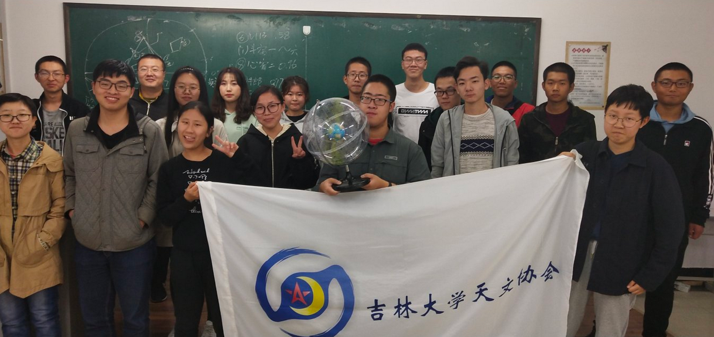
JAS
In JAS (Jilin university Astronomy Society), I spent a lot of unforgettable days with JASers, these lovely people.
We have astronomy lectures, stargazing (camping and BBQ!), and outreach activities in the campus.
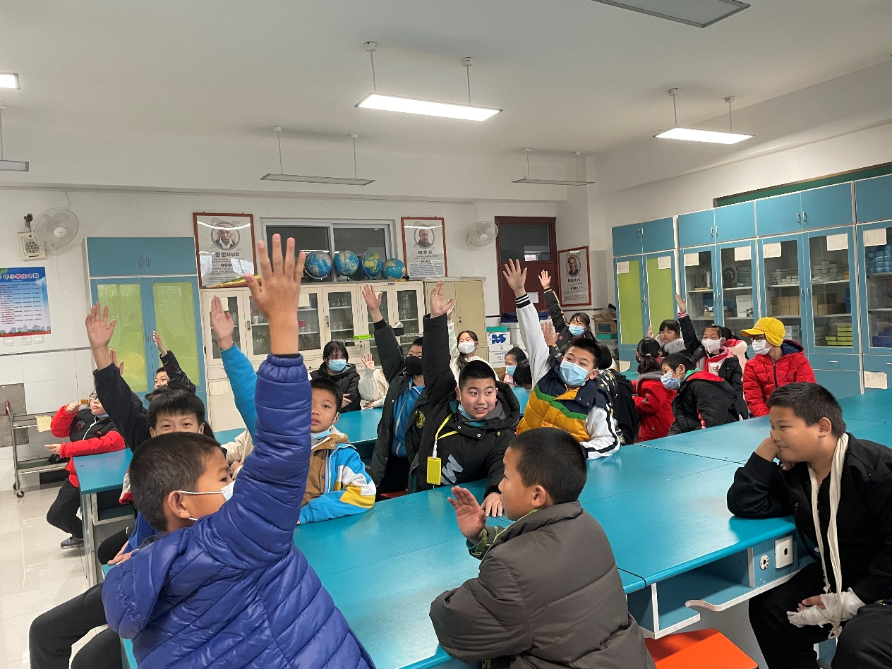
UCAS
UCASAA
Outreach Department of the UCAS Astronomy Association: take passers-by and classmates to see the stars, and participate the Equinox Project: play with primary school students and tell them how to find aliens.
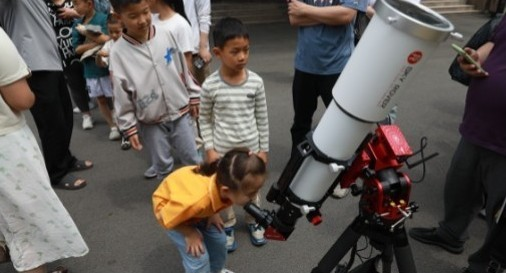
NAOC
Outreach Department of the NAOC Graduate Student Union: roadside astronomy, outreach in primary and
secondary schools, the CAS Public Open Day (tell public, children, and even faculties in CAS how to observe sun safely).
Online Outreach
It's better to share knowledge online for I人 :D
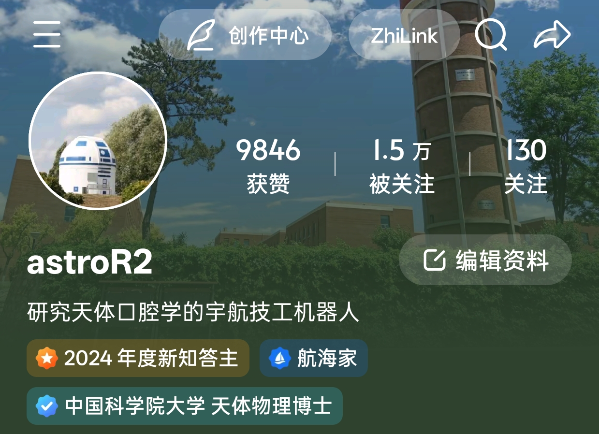
Zhihu (知乎) is a Chinese Q&A platform like Quora. Sometimes I write scientific answers on it just for fun,
and document my orthodontic experiences. Welcome to follow me, a Top Astronomy Answerer on Zhihu
@astroR2!
(I also have 15k followers!)
Here is a collection
of my Zhihu articles (in Chinese).
Photos
Amateur photos by me (still learning).
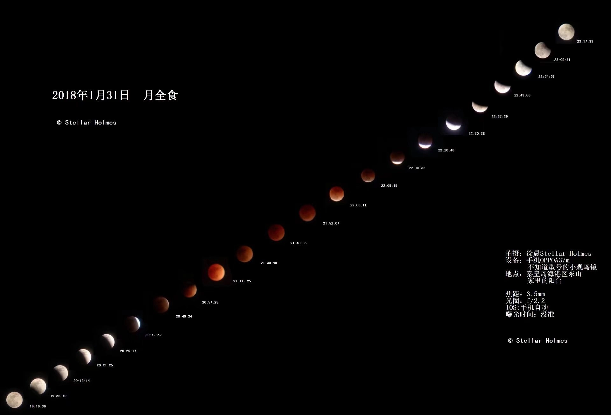
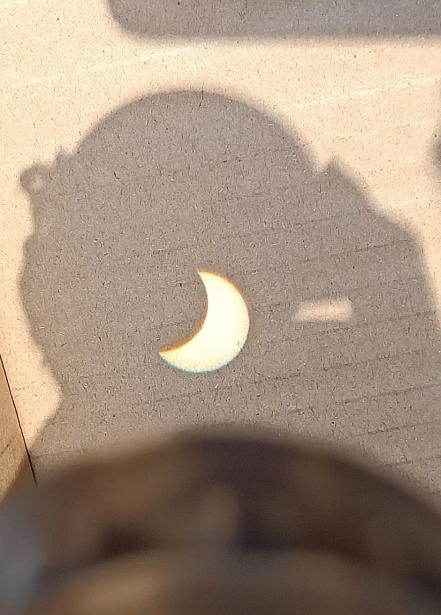
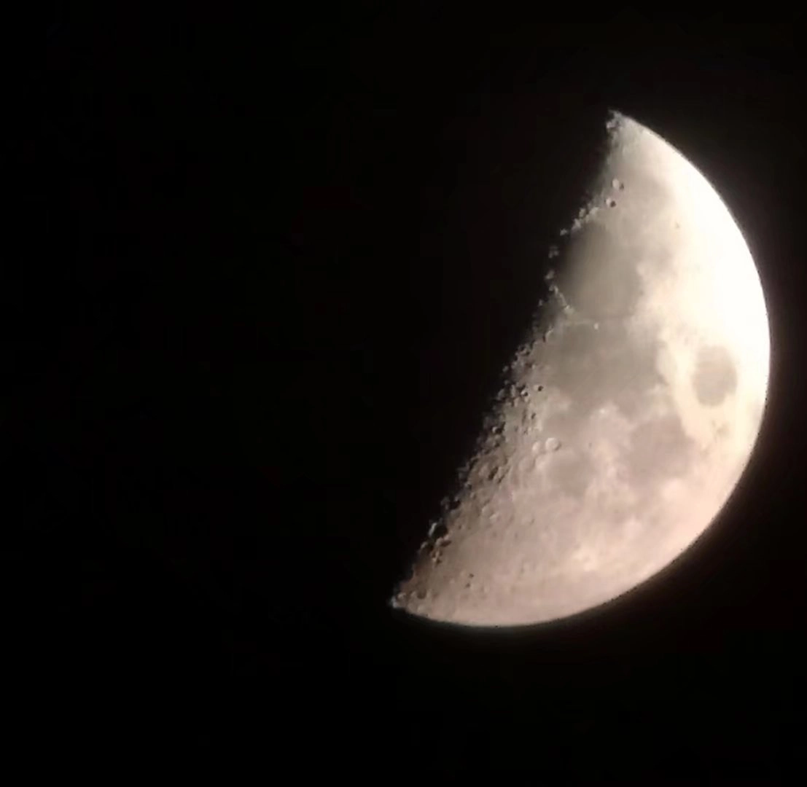
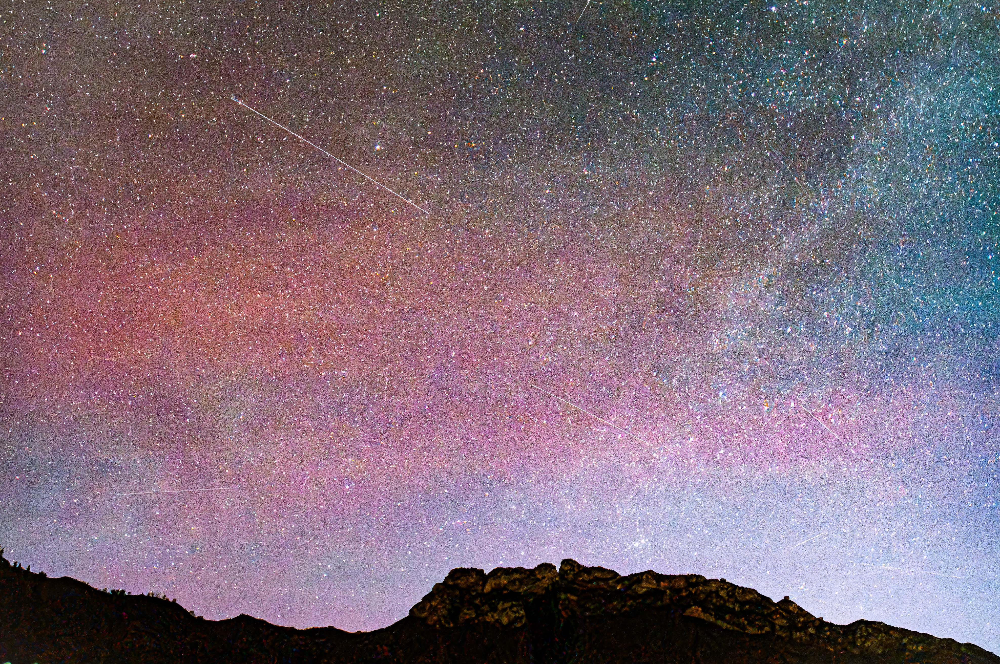
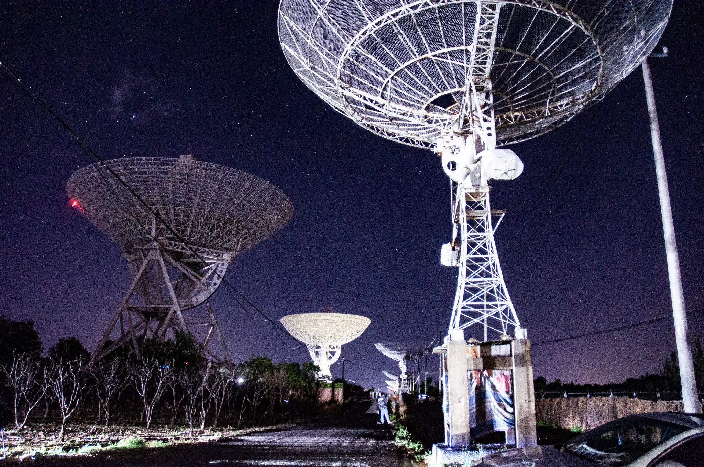
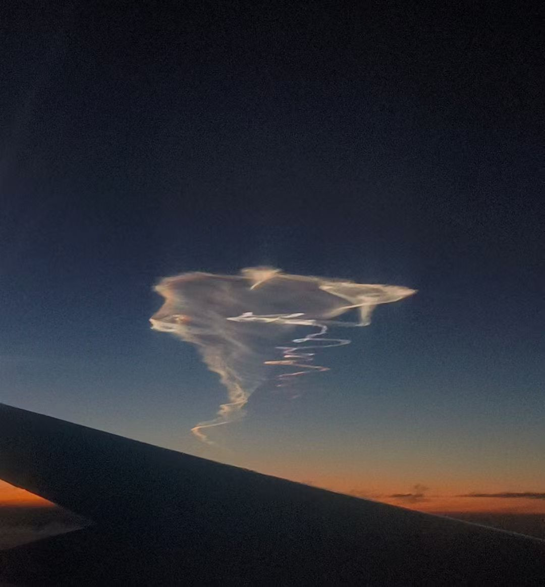
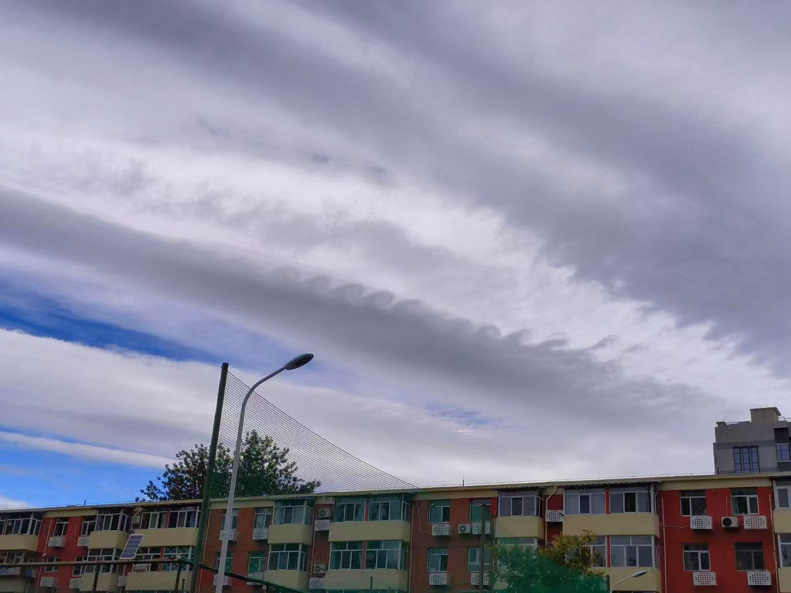
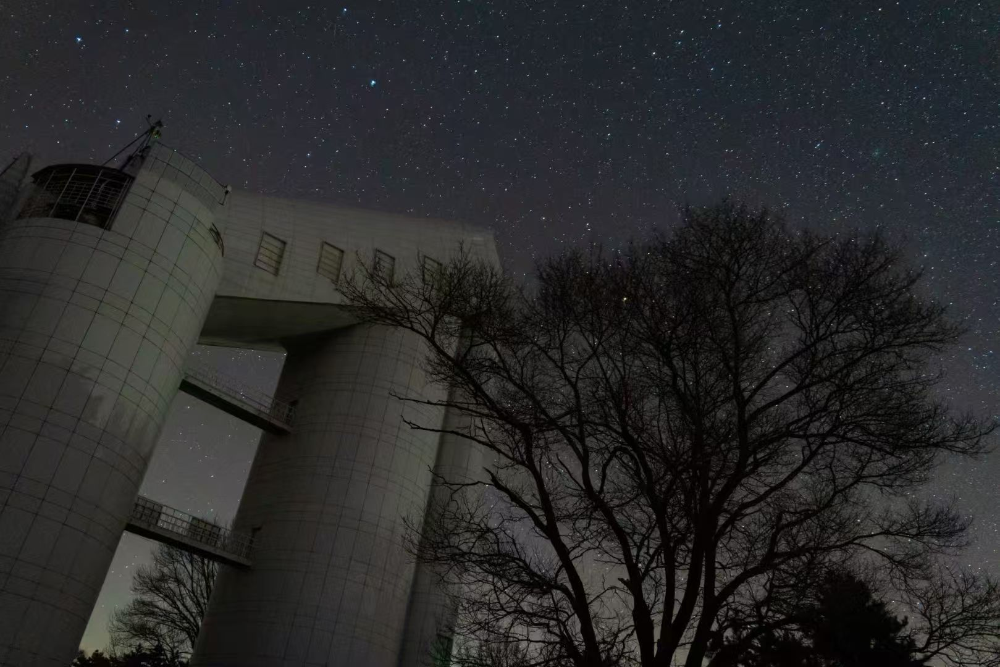
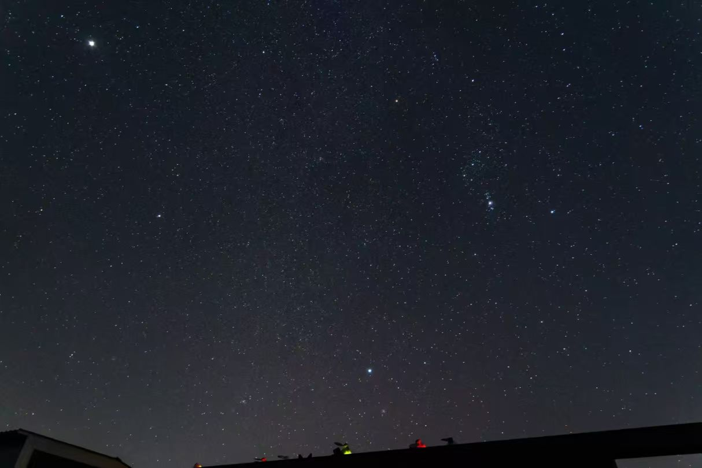